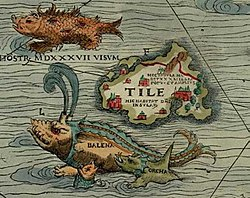
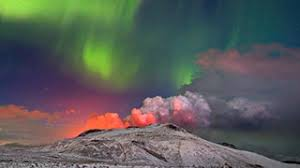
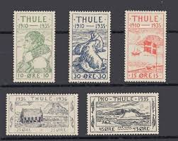

THULE

Introduction
Thule (/ˈθjuːliː/; Ancient Greek: Θούλη, Thúlē; Latin: Thūlē or Thylē) is the northernmost location mentioned in ancient Greek and Roman literature and cartography. It was first described around 320 BC by the Greek explorer Pytheas of Massalia (modern-day Marseille, France), who referred to it as a distant island located north of Britain or Ireland. In classical and medieval writings, the term Ultima Thule ("farthest Thule") became a metaphor for any distant place beyond the known world. Modern interpretations of Thule's location have included the Orkney and Shetland Islands, northern Scotland, the Faroe Islands, Iceland, the Estonian island of Saaremaa (also known as Ösel), and the Norwegian island of Smøla.
In classical and medieval literature, ultima Thule (Latin "farthest Thule") acquired a metaphorical meaning of any distant place located beyond the "borders of the known world". By the Late Middle Ages and the early modern period, the Greco-Roman Thule was often identified with the real Iceland or Greenland. Sometimes Ultima Thule was a Latin name for Greenland, when Thule was used for Iceland. By the 19th century, however, Thule was frequently identified with Norway, Denmark, the whole of Scandinavia, one of the larger Scottish islands, the Faroes, or several of those locations
Literary Legends
Volcan thule -Dante's Inferno
Years ago I read the book of an Italian engineer that described Dante’s Inferno as a real path the author might have followed—one that the engineer identified in Iceland. From the perspective of ley lines, the island is particularly interesting due to volcanic activity, which emits vibrations and infrasound. Iceland has also been seen as a border between the micro and macro cosmos.

Thule Air Base - knud Rasmussen
Thule formerly gave its name to real places. In 1910, the explorer Knud Rasmussen established a missionary and trading post in north-western Greenland, which he named "Thule". It later gave its name to the northernmost United States Air Force base, Thule Air Base, in northwest Greenland. With the transfer of the base to the United States Space Force, its name was changed to Pituffik Space Base on April 6, 2023.

Thule Stamps
Historians have proposed the Norwegian island of Smøla, while medieval scholars associated Thule with Greenland and Iceland. These beautiful 1935–1937 stamps from Greenland pay homage to its ancient name.

Historical Location
Map by Sebastian Münster
A map of Northern Europe from 1542 by Sebastian Münster, a German cartographer, shows Thyle (or Thule) marked in the top left. To the right of Lithuania lies Moscovia, a duchy that belonged to the Rus.

Thule - Orkini
The third-century Latin grammarian Gaius Julius Solinus wrote in his Polyhistor that "Thyle, which was distant from Orkney by a voyage of five days and nights, was fruitful and abundant in the lasting yield of its crops". The fourth-century Virgilian commentator Servius also believed that Thule sat close to Orkney
Thule - Iceland
Other late classical writers such as Orosius (384–420) describe Thule as being north and west of both Ireland and Britain, strongly suggesting that it was Iceland
Nazi Germany leadership considered Iceland to be the Thule area and the birthplace of the ancient Aryan race, with senior Nazi leader Heinrich Himmler even sending an expedition team to Iceland in 1938 with hopes of finding a temple for Nordic gods like Thor and Odin
A work of prose fiction in Greek by Antonius Diogenes entitled The Wonders Beyond Thule appeared c. AD 150 or earlier.Gerald N. Sandy, in the introduction to his translation of Photius' ninth century summary of the work, notes that this Thule most closely matches Iceland.
Thule - Estonia
Thule is the farthest north location mentioned in ancient Greek and Roman literature and cartography. While its exact location remains uncertain, modern interpretations have identified it with various places such as the Orkney and Shetland Islands, northern Scotland, and even the island of Saaremaa (also known as Ösel) in Estonia. The identification of Thule with Orkney stems from geographic proximity and ancient sailing routes, whereas the Estonian theory is supported by some researchers who point to archaeological and linguistic traces that may align with classical descriptions of Thule.
Another hypothesis, first proposed by Lennart Meri in 1976, holds that the island of Saaremaa (which is often known by the exonym Ösel) in Estonia, could be Thule. That is, there is a phonological similarity between Thule and the root tule- "of fire" in Estonian (and other Finnic languages). A crater lake named Kaali on the island appears to have been formed by a meteor strike in prehistory. This meteor strike is often linked to Estonian folklore which has it that Saaremaa was a place where the sun at one point "went to rest".
Thule - Norway
In 2010, scientists from the Institute of Geodesy and Geoinformation Science at Technische Universität Berlin claimed to have identified persistent errors in calculation that had occurred in attempts by modern geographers to superimpose geographic coordinate systems upon Ptolemaic maps. After correcting for these errors, the scientists claimed, Ptolemy's Thule could be mapped to the Norwegian island of Smøla.
Thule - Shetland
Classicist H.J.W. Wijsman at the University of Amsterdam suggested that Thule was the Shetland Islands, which lie halfway between Orkney and Norway. They experience long days of sunlight and pancake ice. However, the Shetlands are too close to Britain to be six days north. Six days suggests either Norway or Iceland.
Research
Monster of Thule
Thule is the farthest north location mentioned in ancient Greek and Roman literature and cartography. While its exact location remains uncertain, modern interpretations have proposed various candidates, including the Orkney and Shetland Islands, northern Scotland, and the Estonian island of Saaremaa (Ösel), based on geographic proximity, ancient sailing routes, and archaeological evidence. On the other hand, a relatively recent proposal suggests that Thule may have been identical with Smøla, an island off the coast of Norway. This theory is supported by the observation that Ptolemy’s map incorrectly depicts northern Britain as turned eastward rather than northward. In 2010, scientists from the Institute of Geodesy and Geoinformation Science at Technische Universität Berlin analyzed these distortions and identified consistent errors in how modern geographers had aligned Ptolemaic coordinates with real geography. After adjusting for these errors, they concluded that Ptolemy's Thule most likely corresponds to the Norwegian island of Smøla.

thule - theory
In some modern spiritual theories, hypotheses have emerged that Thule was not just an island, but rather part of a lost continent similar to Atlantis, and that it was the center of an ancient, lost wisdom. This idea was embraced by some occult movements in the early 20th century, particularly those originating in Nazi Germany (such as the Thule Society).
In some Germanic myths, Thule was described as not just an island, but an entrance to an underground world inhabited by mysterious beings, a gateway to Shambhala or Agartha in Eastern mythology.
thule Society
The Thule Society believed that Thule was the original homeland of the Aryans — the mythical cradle of a pure and powerful civilization that predated all others. It was regarded as the birthplace of the “pure Aryan race,” from which the Nazis claimed descent. To them, the island also symbolized racial purity and lost spiritual power. It served as a gateway to hidden knowledge from the distant past, akin to a Germanic version of Atlantis.

Poeple of Thule
The Roman poet Silius Italicus (AD 25 – 101) wrote that the people of Thule were painted blue: "the blue-painted native of Thule, when he fights, drives around the close-packed ranks in his scythe-bearing chariot",implying a link to the Picts (whose exonym is derived from the Latin pictus "painted"). Martial (AD 40 – 104) talks about "blue" and "painted Britons", just like Julius Caesar.Claudian (AD 370 – 404) also believed that the inhabitants of Thule were Picts
Eustathius of Thessalonica, in his twelfth-century commentary on the Iliad, wrote that the inhabitants of Thule were at war with a tribe whose members dwarf-like, only 20 fingers in height.The American classical scholar Charles Anthon believed this legend may have been rooted in history (although exaggerated), if the dwarf or pygmy tribe were interpreted as being a smaller aboriginal tribe of Britain which the people on Thule had encountered.
They worshipped the god Apollo, and everyone on the island worshipped the moon. The islanders built a huge temple to practice their worship and decorated the walls of the temple with worship rituals. They mentioned in these drawings that the moon is not spherical and that the god watches and watches them through the moon, and that every 19 years he comes down at night to celebrate with them, dancing and singing until the flowers bloom in the spring.
Some ancient accounts describe the Thule people as a distinct, tall people who spoke no intelligible language and lived a primitive life. In some Norse myths, they were attributed with quasi-mythical characteristics, such as communicating with spirits or living in harmony with the forces of nature.
Pytheas described the Thule poeple as who lived there were very tall, strong, pale, blond-haired, and wise. They survived on fish, possibly seals, herbs, fruits, and millet and even had a popular drink made of grain and honey. They had technologies like tools and boats

Description Of Land
The Roman historian Pliny the Elder said that the waters surrounding Thule Island were not ordinary water, but a mixture of fog, water, and air that resembled melted glass, making navigation almost impossible.
Pytheas says: Neither earth, water, nor air exist separately, but are a sort of concretion of all these, resembling a sea-lung in which the earth, the sea, and all things were suspended… there are no nights during the solstice when the sun is passing through the sign of Cancer and also no days during the winter solstice… For someone from the Mediterranean, this was a never-before-seen, alien phenomenon. Not only was the sea “congealed”, but it was immensely cold and full of mist. However, when he came out of the fogbank, he saw it was a land of “endless splendor” as he further observed that the sun hung in the sky perpetually.